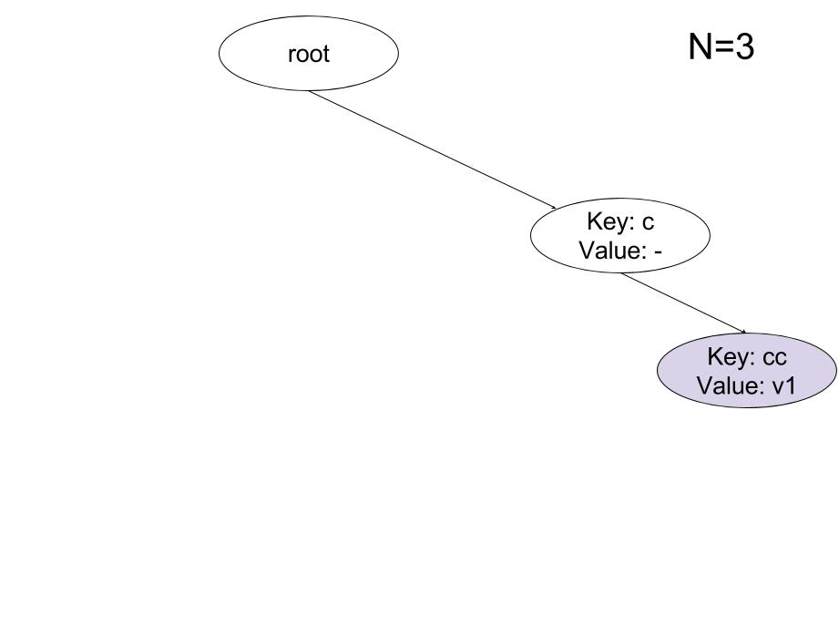
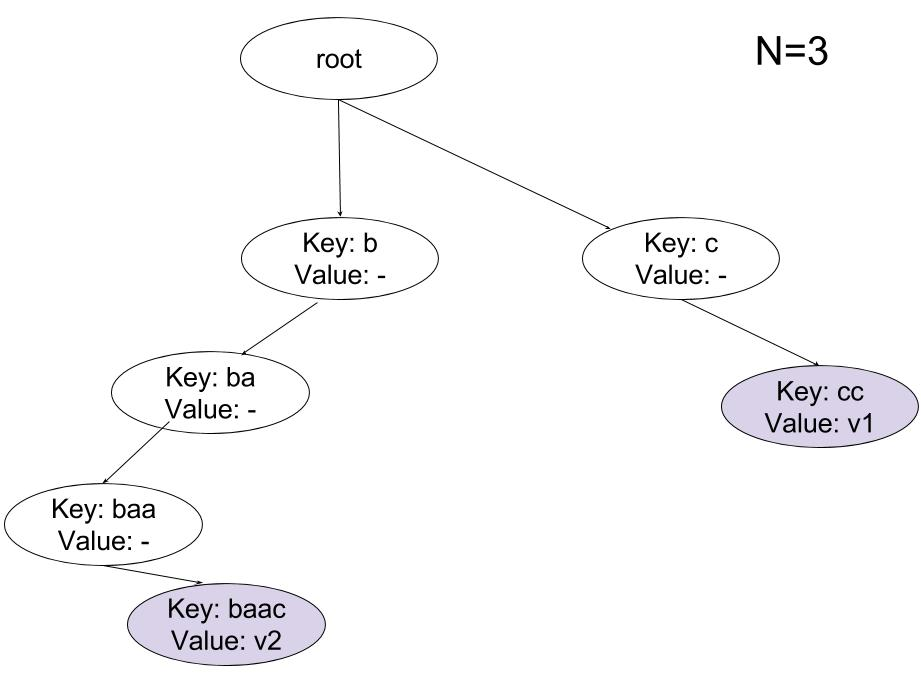
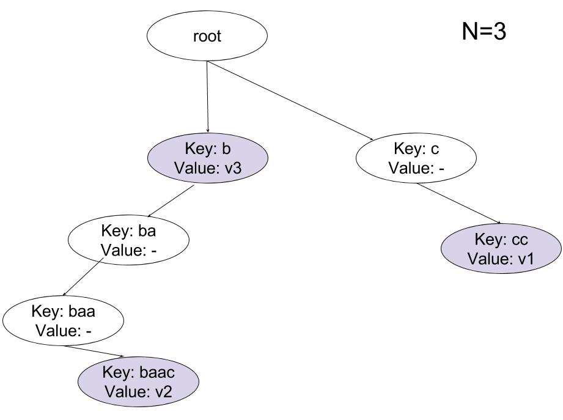

Description
You will implement a data structure in your last project in this semester.
We name this data stucture TrieMap.
Essentially, it is a map, meaning that you will store key-value pairs.
Also, your data structure should return the value that corresponds to a given key.
The keys are stored in another data structure named trie.
Tries are efficient data structures for search operations.
They are quite similar to radix search trees that you learned in the class,
so don't be afraid if you have not ever heard of the data structure.
-
Tries are basically trees (not necessarily binary). Each node in a trie stores a word.
-
In our context, a word is simply a sequence of letters in the alphabet. Example words are "asd", "a", "ryhthn", "sproidafgbntujhdt".
-
The alphabet size (N) is the number of letters in our alphabet. Our alphabet consists of the first N letters in English. For example, if N=2/5/11, our alphabet is {a,b},{a,b,c,d,e},{a,b,c,d,e,f,g,h,i,j,k}.
So, we do not directly assume that words are made up of a-z.
-
The root represents an empty string ("").
-
Each node in the trie can have N children, where each edge is reserved for a letter in the alphabet. So, a node that is in the k'th level (k edges away from the root) must store a word of length k. The path from the root to a particular node gives the word stored in that node.
-
In the context of
TrieMap, we use this data structure to store key-value pairs. Keys are nothing but the words stored in trie.
-
A good tutorial, including a must-watch video, on Trie: http://www.geeksforgeeks.org/trie-insert-and-search/
-
Another tutorial: https://www.topcoder.com/community/data-science/data-science-tutorials/using-tries/
-
Suppose we have an alphabet of N=3 letters. When only the key-value pair cc-v1 is inserted, the trie looks like this:

-
When baac-v2 is inserted, we have the following:

-
Finally, to insert b-v3, you do not create a new node:

-
Shaded nodes are called leaf. Observe that the meaning of the word is not the same as in the context of trees in general. Here, if a path from the root to a particular node forms a key that is inserted in the tree, then this particular node is referred as leaf. So, the node that stores v3 as value is also a leaf.
-
When you are asked to return the value that corresponds to a key k, you simply process each letter in k. If you end up in a leaf, you return the value. Otherwise, you conclude that no value whose key is k is inserted.
-
As you see, the complexity of search operation is O(L), if L is the word length. Note that this is different than binary search trees. In binary search trees, a comparison made in each node costs O(L) as you compare two strings, not characters. Then, overall complexity becomes O(L*logM), where M is the number of nodes in the binary tree.
Tasks
-
Task-1: Implement
TrieMap<T> class by extending TrieMapBase<T> abstract class (Observe that you will also need to implement Node<T>). Here, T is the type of the keys to be stored.
-
Task-2: Implement
public static boolean containsSubstr(String text, String key)
that returns true if key appears as a substring in text and false otherwise. You may assume that both strings are made up of a-z.
-
Task-3: Implement
public static int wordCount(String book, String word)
that returns how many times word appears in the book. Each word in book is separated by a white space. You may assume that both strings are made up of a-z and white space.
-
Task-4: Implement
public static String[] uniqueWords(String book)
that returns the unique words in a book. Each word in book is separated by a white space. You may assume that strings are made up of a-z.
-
Task-5: Implement
public static String[][] autoComplete(String[] userHistory, String[] incompleteWords)
that suggests word completions based on the counts of the words written previously. More formally, given a string S of consecutive letters (S not containing any white space), autocomplete feature must recommend 3 most commonly written words that start with S. A very inefficient way of solving the problem is the following: Among all the strings in the user history, you will take those that start with S, sort them according to their frequencies (how many times they are written), and recommend the 3 most frequently written ones. But you will use Trie data structure to solve the problem efficiently.
The first parameter above consists of the words written previously by the user. The second parameter is the list of strings your code will autocomplete. For each string in incompleteWords, you will recommend three words. Therefore, if the second parameter has length S, you will return a Sx3 array that contains the recommendations for each word to be autocompleted. You may assume that all strings are made up of a-z.
Notes
-
NOTICE: When you ignore the values, TrieMap reduces to Trie. You will have to use that property.
-
In TrieMap, keys are always strings, values must be generic.
-
In TrieMap, N is not greater than 26 and not less than 2.
-
In TrieMap, N and alphabet will always be consistent
-
Do not change the class definition of TrieMap:
public class TrieMap<T> extends TrieMapBase<T>
-
You are expected to use Trie data structure in your solution to Task2-3-4-5. If not, you will get no credit.